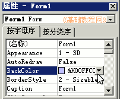

VB程序设计基础
作者：TeliuTe 来源：基础教程网
窗口是程序的基础，里面放有各种控件，它也是一个用户使用的界面，下面我们来看一个练习；
1、启动VB
1）双击桌面上的图标，或者点开始菜单，运行VB；
2）在出来的新建窗口中，点“打开”按钮，新建一个标准EXE工程，然后进入主窗口，
以 Form 为文件名保存文件到自己的文件夹，注意新建一个文件夹、保存两次；
2、设计窗体
1）在右边的属性窗口中，找到 BackColor 修改背景色为淡紫色；

2）在背景色属性下面找到标题 Caption，把里面的 Form1 修改为“窗体”；
3）保存一下文件，点运行按钮，看一下窗口的效果，然后返回继续修改；
4）在属性窗口中往下找到 Icon 图标选项，点击右边三个小点按钮，找到本课 images 文件夹中的 MISC42.ico 图标文件；
图标文件也可以在VB安装文件夹的 .\Common\Graphics\Icon 文件夹中找到；
5）保存一下文件，运行一下看看效果，
返回继续修改属性，找到 Picture 属性，点击找到一幅大图片作为背景图(本课 images 文件夹中有一幅 bg.gif 图片)；
6）继续往下找到 WindowState 修改为 2-Maximized 最大化，属性窗口的底部有属性的简要说明；
7）保存一下文件，运行文件看一下效果；
8）点菜单“文件-生成Form.exe”，以“窗体”为文件名，保存到自己文件夹，这是一个可执行程序，可以在文件夹中双击运行；
窗体范例(在弹出的对话框中点“运行、运行”)
本节学习了设计窗体的基本操作，如果你成功地完成了练习，请继续学习下一课内容；
本教程由86团学校TeliuTe制作|著作权所有
基础教程网：http://teliute.org/
美丽的校园……
转载和引用本站内容，请保留版权信息和本站链接。